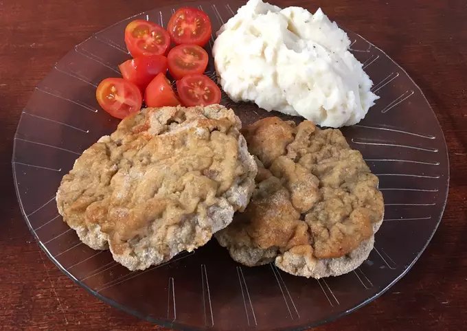

- Ingredientes:
- 12 raciones
- 1 y 1/2 kg carne picada magra
- C/n condimentos varios (sal, pimienta, orégano, ajo en polvo, perejil)
- 3 huevos
- Chorro leche
- C/n pan rallado
- A la carne picada, le agregan los condimentos que más les gusten (puede ser sal, pimienta, ajo en polvo o perejil) y mezclan todo.
- Agarran un poco de carne (debe ser grande porque al cocinarla se achica) hacen una bolita y las aplastan bien. El mismo procedimiento hasta acabar la carne, intentando que queden de tamaños parecidos.
- En un bowl mezclan los huevos con la leche y le agregar en orégano.
- EMPANADO: agarran los trozos de carne y los pasan por pan rallado, luego por la mezcla con huevo y de vuelta por pan rallado.
- Las colocan en una asadera bien aceitada y las mandan al horno precalentado a 180 grados por media hora, o las hacen en una sartén o wok con bastante aceite.
- Pueden dejarlas en la heladera sin cocinar en el caso que no vayan a comer tantas, o para hacerlas en el momento que quedan más ricas en vez de hacerlas todas juntas e ir comiendo con el paso de los días.
- Disfrutar! Espero sus fotos de cuando las hagan.